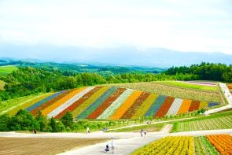
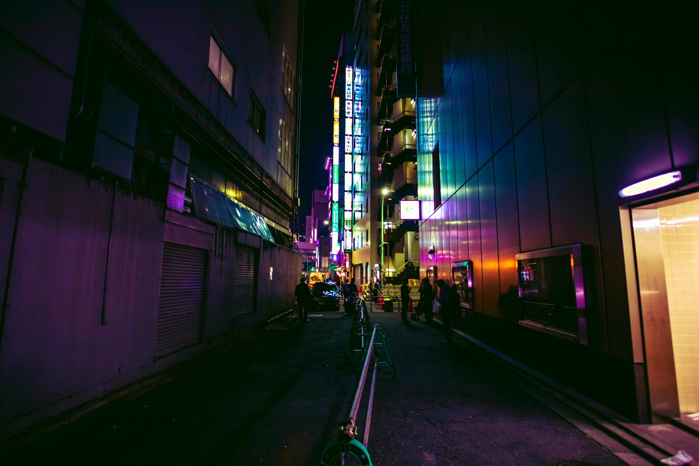
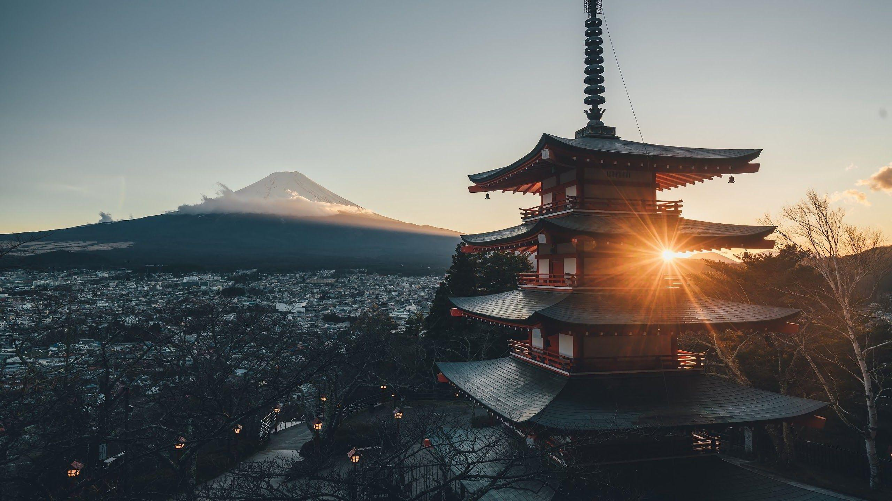

Hokaido
Japan's northern gem, Hokkaido offers breathtaking landscapes, hot springs, and exceptional skiing. Renowned for its flower fields, fresh seafood, and national parks, it's a haven for outdoor adventurers and nature lovers, including Hokusai’s famous prints, and attracts photographers year-round.
Read More

Tokyo City
A vibrant metropolis, Tokyo seamlessly blends ancient traditions with futuristic innovation. Explore historic temples, towering skyscrapers, world-class cuisine, and bustling shopping streets like Shibuya and Ginza.
Read More
Shrine
Shrines in Japan are sacred Shinto spaces, often marked by iconic torii gates. These peaceful sites host traditional ceremonies, festivals, and rituals. Visitors can experience blessings, cultural heritage, and spiritual reflection amidst serene surroundings.
Read More

Mount Fujii
The Japanese tea ceremony, or Chanoyu, embodies harmony, respect, purity, and tranquility. This meditative ritual involves preparing and serving matcha green tea in a traditional setting. Rooted in Zen Buddhism, MOREOVER this it values simplicity and mindfulness. Every aspect in trh gestures, reflects a connection to nature and Japanese aesthetics.
Read More